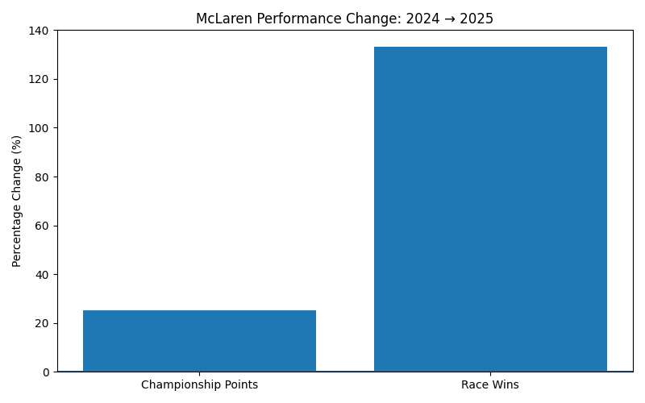
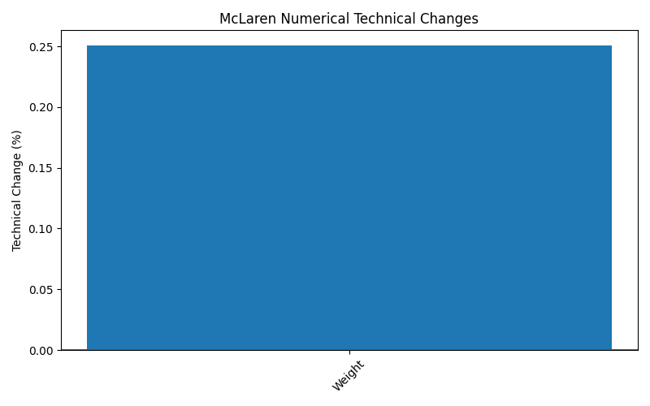
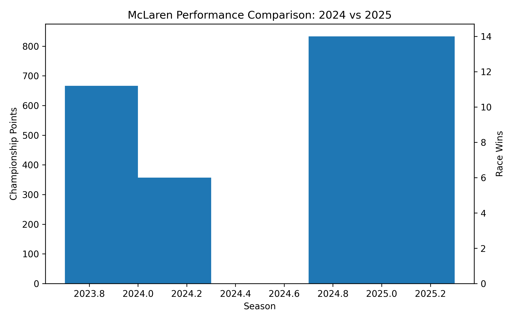
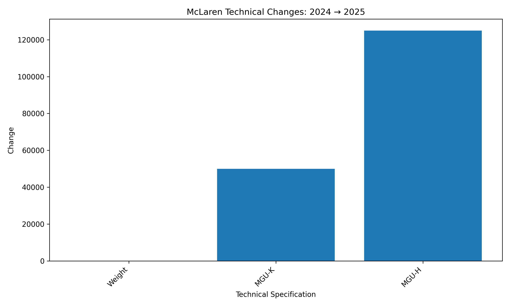
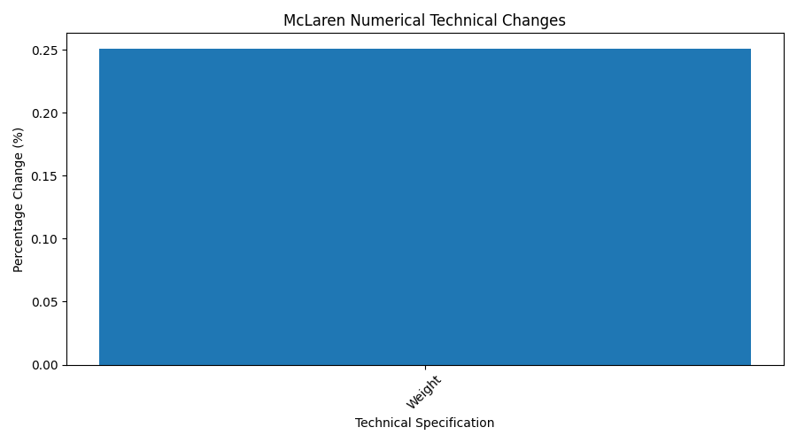

What We Did
The visualization stage converts the results of the technical and performance analysis into charts and graphs. These visualizations make season comparisons, team performance changes and technical changes easier to understand.
Visualization Categories
Technical Analysis
Visual comparison of McLaren technical specifications between seasons.
Performance Analysis
Charts showing championship points, race wins and team performance.
Technical vs Performance
Charts comparing technical changes with performance changes.
Final Dashboard
A consolidated dashboard presenting the major findings of the project.
McLaren Analysis


Team Performance Comparison


Technical vs Performance
Performance Percentage Change
Percentage changes in the selected performance measures.

View Full ChartTechnical Percentage Change
Percentage changes in selected technical measures.

View Full ChartFinal Project Visualizations
Final Performance Comparison
Final comparison of the major performance results.

View Full ChartFinal Technical Changes
Final visualization of the technical changes identified during the analysis.

View Full ChartMcLaren Final Technical Changes
Final McLaren technical change visualization.

View Full ChartVisualization Summary
The visualizations provide a clear representation of the technical and performance analysis performed in the project.
The charts show McLaren's increase in championship points and race wins between 2024 and 2025, along with the observed technical changes.
Team comparison charts also show the performance differences between McLaren and Mercedes across the analyzed seasons.
The visualizations are intended to make the final findings easy to understand and suitable for project demonstration.
Final Dashboard
The final dashboard combines the major technical, performance and comparison results into a single visual summary.
View Final Dashboard →Next Step
The next stage is Final Results, where the project's key findings, conclusion and final dashboard are presented.
Go to Final Results →